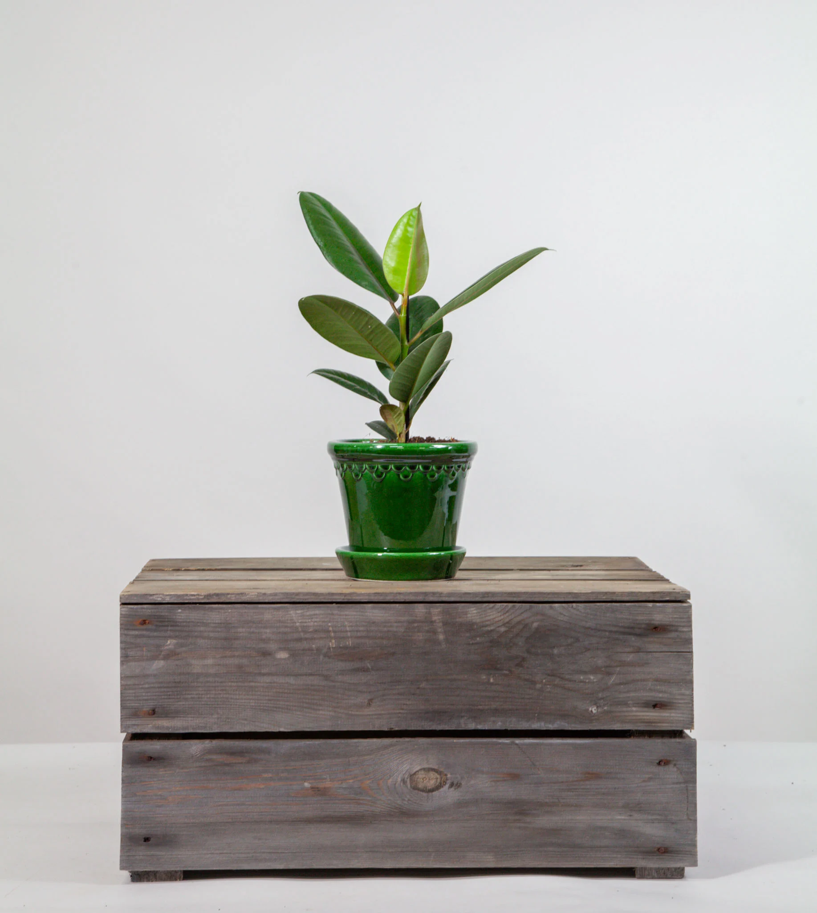
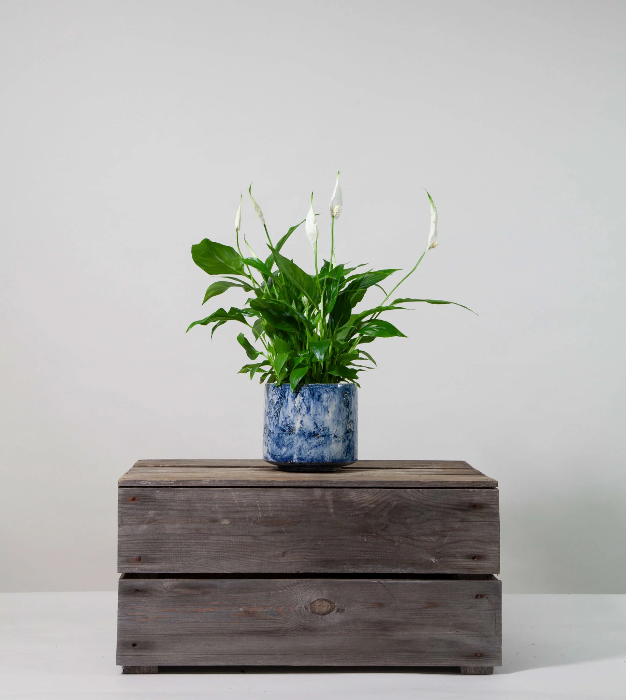

Planty, for plant lovers everywhere
Rubber Plant
Peace Lily
Snake Plant
Blue Pot

Green Pot

Grey Pot

Caring for a Rubber Plant
Grow in houseplant compost in bright but filtered or indirect light. During growth water moderately and apply a high nitrogen fertiliser every month; water sparingly in winter. Topdress annually and repot every 2-3 years.
Caring for a Peace Lily
Peace lilies (Spathiphyllum wallisii) are popular houseplants with distinctive white flower-like spathes that stand above the glossy tropical foliage. Easy to grow and happy in indirect light, they make elegant additions to any home.
Caring for a Snake Plant
The Snake Plant (Sansevieria trifasciata) is the perfect solution for those wanting some greenery in their home but very little time to look after them.